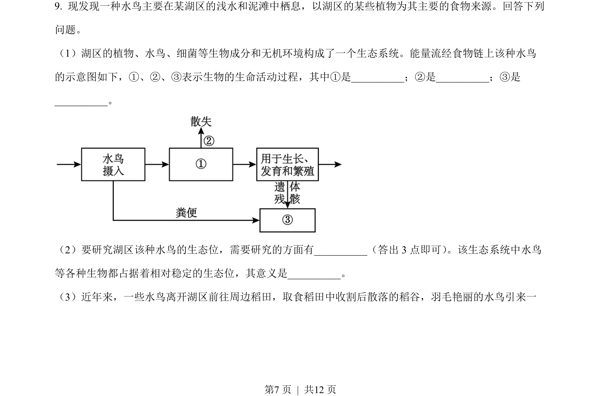
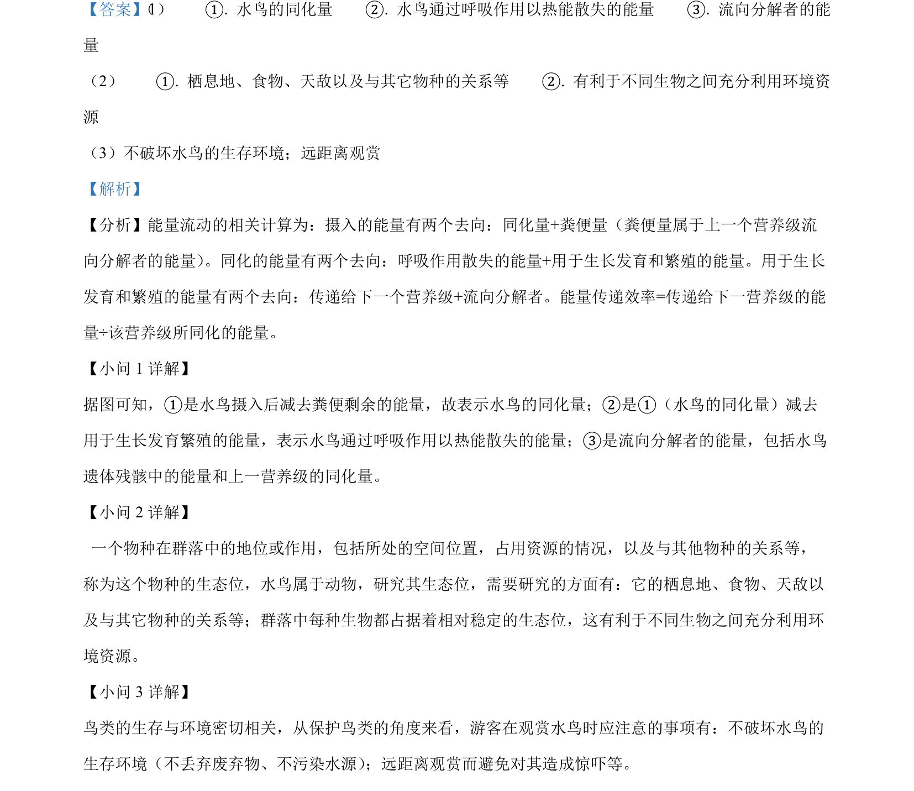

考点：生态系统 能量流动 生态位

该题考查生态系统的组成、能量流动过程及生态位研究内容与意义。

📄 原 PDF 第 7 页：
素材/真题/吉林/2008-2024·（吉林）生物高考真题/2023年高考生物试卷（新课标）（解析卷）.pdf
（2）要研究湖区该种水鸟的生态位，需要研究的方面有_（答出 3 点即可） 。该生态系统中水鸟 等各种生物都占据着相对稳定的生态位，其意义是_。 （3）近年来，一些水鸟离开湖区前往周边稻田，取食稻田中收割后散落的稻谷，羽毛艳丽的水鸟引来一